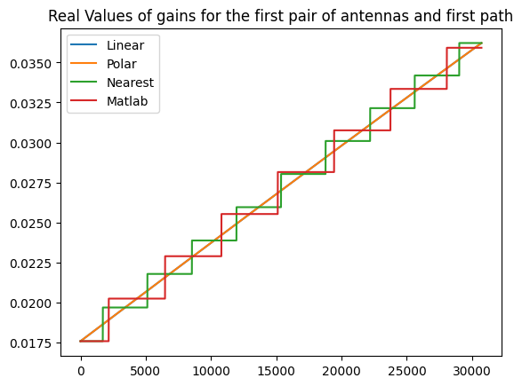
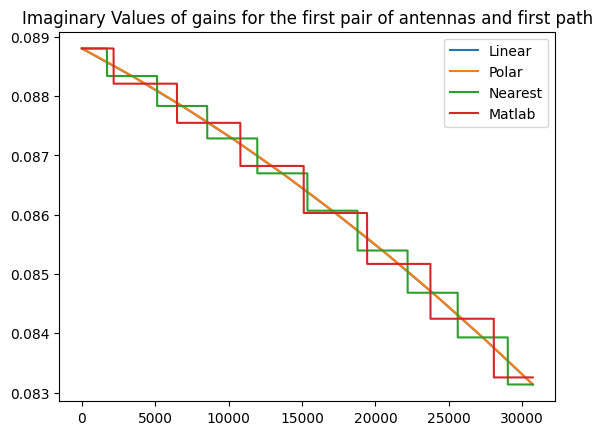
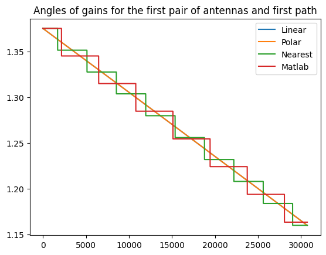
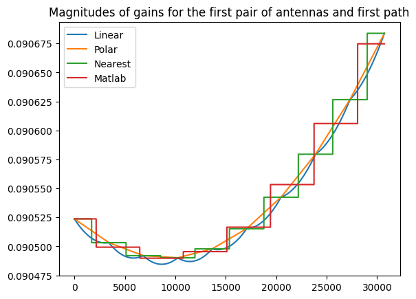
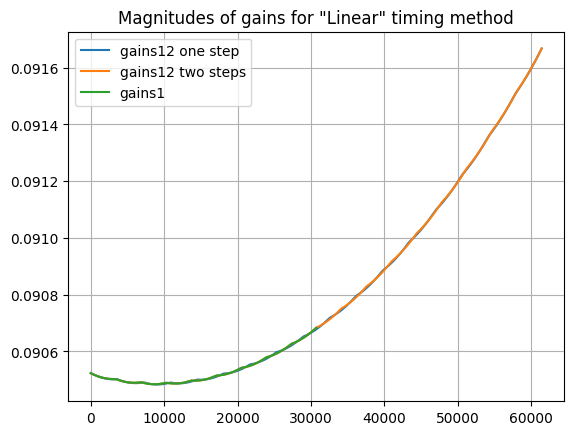
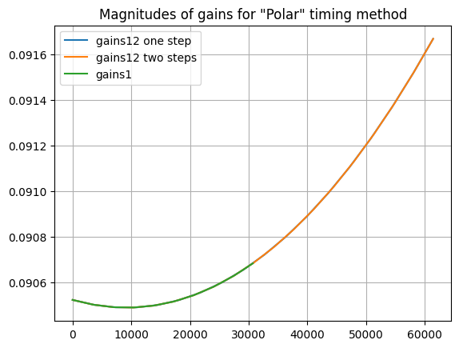
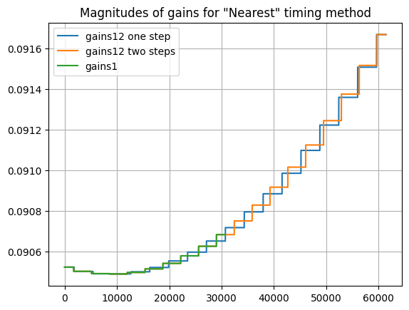
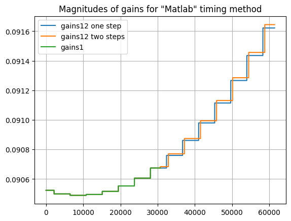

Channel timing
This notebooks studies the timing characteristics of a CDL channel model. The same principals also apply to TDL channel models.
[1]:
import numpy as np
import scipy.io
import time
from neoradium import CdlChannel, AntennaPanel, random
[2]:
speedKmh = 15 # speed of UE device: 15 km/h
speed = speedKmh*1000/3600
c = 299792458 # Speed of light
f = 4e9 # 4 GHz
d = speed*f/c # Doppler Shift
gains = []
# Trying different timing methods
for timingMethod in ['Linear', 'Polar', 'Nearest', 'Matlab']:
channel = CdlChannel('C', delaySpread=10, carrierFreq=f, dopplerShift=d,
txAntenna = AntennaPanel([2,2], polarization="x", matlabOrder=True),
rxAntenna = AntennaPanel([1,1], polarization="+", matlabOrder=True),
txAntennaOrientation = [10, 20, 30],
angleMeans = [130,70,80,110], angleSpreads = [5,11,3,3], # Angle Scaling
seed = 123, # Repeatable results
timing = timingMethod)
numSamples = int(channel.sampleRate * 0.001) # Number of samples for one subframe.
t0= time.time()
channelTimes = channel.getChannelTimes(numSamples)
channelGains = channel.getChannelGains(channelTimes) # Shape: nc x nr x nt x np
gains += [ channel.upSample(channelGains, channelTimes, numSamples) ] # Shape: ns x nr x nt x np
print("Execution Time (%s): %.4f"%(timingMethod, time.time()-t0))
import matplotlib.pyplot as plt
pp = 1
for i,timingMethod in enumerate(['Linear', 'Polar', 'Nearest', 'Matlab']):
plt.plot(np.real(gains[i])[:,0,0,pp], label=timingMethod)
plt.legend()
plt.title("Real Values of gains for the first pair of antennas and first path");
plt.show()
for i,timingMethod in enumerate(['Linear', 'Polar', 'Nearest', 'Matlab']):
plt.plot(np.imag(gains[i])[:,0,0,pp], label=timingMethod)
plt.legend()
plt.title("Imaginary Values of gains for the first pair of antennas and first path");
plt.show()
for i,timingMethod in enumerate(['Linear', 'Polar', 'Nearest', 'Matlab']):
plt.plot(np.angle(gains[i])[:,0,0,pp], label=timingMethod)
plt.legend()
plt.title("Angles of gains for the first pair of antennas and first path");
plt.show()
for i,timingMethod in enumerate(['Linear', 'Polar', 'Nearest', 'Matlab']):
plt.plot(np.abs(gains[i])[:,0,0,pp], label=timingMethod)
plt.legend()
plt.title("Magnitudes of gains for the first pair of antennas and first path");
plt.show()
Execution Time (Linear): 0.1457
Execution Time (Polar): 0.2356
Execution Time (Nearest): 0.0185
Execution Time (Matlab): 0.0185




[ ]:
[3]:
# Checking the continuity of the channel gains for each timing method.
# Running in 2 steps once and then running in one step with twice the samples and comparing the results.
for timingMethod in ['Linear', 'Polar', 'Nearest', 'Matlab']:
print("Testing with '%s':"%(timingMethod))
channel = CdlChannel('C', delaySpread=10, carrierFreq=f, dopplerShift=d,
txAntenna = AntennaPanel([2,2], polarization="x", matlabOrder=True),
rxAntenna = AntennaPanel([1,1], polarization="+", matlabOrder=True),
txAntennaOrientation = [10, 20, 30],
angleMeans = [130,70,80,110], angleSpreads = [5,11,3,3], # Angle Scaling
seed = 123, # Repeatable results
timing = timingMethod)
numSamples = int(channel.sampleRate * 0.001) # Number of samples for one subframe.
# get the gains for "numSamples" samples
channelTimes = channel.getChannelTimes(numSamples)
channelGains = channel.getChannelGains(channelTimes) # Shape: nc x nr x nt x np
gains1 = channel.upSample(channelGains, channelTimes, numSamples) # Shape: ns x nr x nt x np
# Advance the channel state.
channel.goNext()
# get the gains again for the same number of samples.
channelTimes = channel.getChannelTimes(numSamples)
channelGains = channel.getChannelGains(channelTimes) # Shape: nc x nr x nt x np
gains2 = channel.upSample(channelGains, channelTimes, numSamples) # Shape: ns x nr x nt x np
# Concatenate the results
gains12c = np.concatenate([gains1, gains2]) # Shape: 2*ns x nr x nt x np
# Restart the channel mode. Note that we want to restart the random generator so that
# we start with the same random initial values.
channel.restart(restartRanGen=True)
# Get the 1-step gains for twice the number of samples for each step.
channelTimes = channel.getChannelTimes(2*numSamples)
channelGains = channel.getChannelGains(channelTimes) # Shape: 2*nc x nr x nt x np
gains12 = channel.upSample(channelGains, channelTimes, 2*numSamples) # Shape: 2*ns x nr x nt x np
# Compare the results
print(" Max Absolute Difference:", np.abs(gains12-gains12c).max())
# Draw the continuity magnitude graphs for each interpolation method.
pp=1
plt.plot(np.abs(gains12)[:,0,0,pp],label="gains12 one step")
plt.plot(np.abs(gains12c)[:,0,0,pp],label="gains12 two steps")
plt.plot(np.abs(gains1)[:,0,0,pp],label="gains1")
plt.legend()
plt.grid()
plt.title("Magnitudes of gains for \"%s\" timing method"%(timingMethod));
plt.show()
Testing with 'Linear':
Max Absolute Difference: 5.369472471200176e-05

Testing with 'Polar':
Max Absolute Difference: 7.4682821260964236e-06

Testing with 'Nearest':
Max Absolute Difference: 0.010692990186467183

Testing with 'Matlab':
Max Absolute Difference: 0.01192575626972184

[ ]:
[4]:
# Checking the continuity of the channel fileters.
# Running in 2 steps first and then running in one step with the same data repeated 2-times and comparing the
# results.
channel = CdlChannel('C', delaySpread=10, carrierFreq=f, dopplerShift=d,
txAntenna = AntennaPanel([2,2], polarization="x", matlabOrder=True),
rxAntenna = AntennaPanel([1,1], polarization="+", matlabOrder=True),
txAntennaOrientation = [10, 20, 30],
angleMeans = [130,70,80,110], angleSpreads = [5,11,3,3], # Angle Scaling
seed = 123, # Repeatable results
timing = "Polar")
# Create some random signal (1 ms)
random.setSeed(123)
txWaveform = random.normal(0,1, # Standard Normal Distribution
(channel.nrNt[1],int(channel.sampleRate*0.001))) # Shape: Nt x NumSamples
# get filter outputs for the input data.
channelTimes = channel.getChannelTimes(numSamples)
filterOutput1 = channel.channelFilter.applyToSignal(txWaveform) # Shape: ns x nt x np
# Advance the filter state.
channel.goNext()
# get filter output again for the same input data.
filterOutput2 = channel.channelFilter.applyToSignal(txWaveform) # Shape: ns x nt x np
# Concatenate the results
filterOutput12c = np.concatenate([filterOutput1, filterOutput2]) # Shape: 2*ns x nt x np
# Restart the channel mode. Note that we want to restart the random generator so that
# we start with the same random initial values.
channel.restart(restartRanGen=True)
txWaveform12 = np.concatenate(2*[txWaveform], axis=1) # Repeat the txWaveform
filterOutput12 = channel.channelFilter.applyToSignal(txWaveform12) # Shape: 2*ns x nt x np
# Compare the results:
print("Max Absolut Difference:", np.abs(filterOutput12-filterOutput12c).max())
Max Absolut Difference: 8.881784197001252e-16
[ ]: